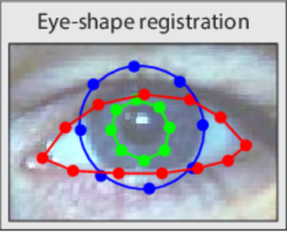
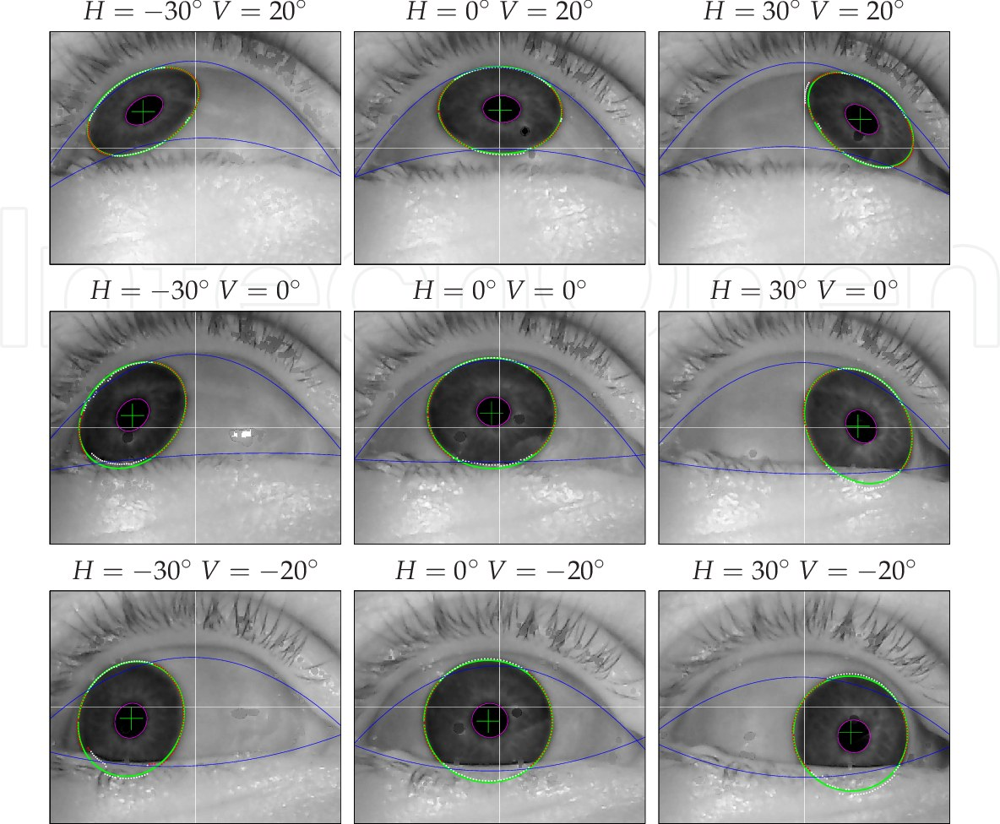
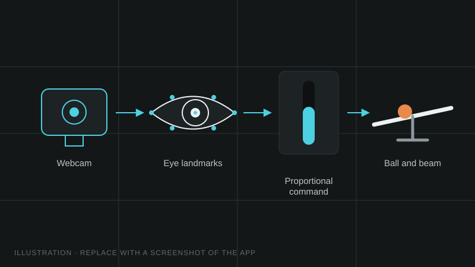

Assistive and biomedical
EyeMotion: Eye-Tracking-Based Motion Control
A low-cost webcam interface that turns where a person looks into a proportional control signal, evaluated on a ball-and-beam task.

The question
People with limited hand function often need expensive, dedicated eye trackers to control a device. Can a standard webcam give smooth, proportional control instead of simple on/off commands?
What I built
A Python interface that uses MediaPipe to find facial and eye landmarks in each webcam frame and OpenCV to process the image. The estimated gaze position is mapped to a proportional control signal that sets the angle of a beam in a ball-and-beam task, a classic control benchmark where the goal is to hold the ball steady.
How the eyes are tracked
In every frame, landmarks are placed on the eyelids, the iris and the eye corners. Where the iris sits between the two corners gives the gaze direction, left to right and up to down, independent of how far the user sits from the camera.



Why ball-and-beam
The task is unstable, so it shows clearly whether the control signal is smooth and fast enough. It also connects to my work adapting a ball-and-beam platform into a rehabilitation tool in the University of New Haven Instrumentation Laboratory.
Results are in the manuscript, which is currently under review. They will be added here once it is published.